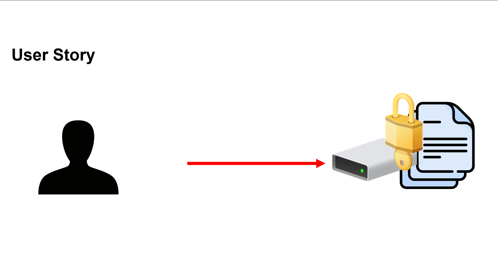
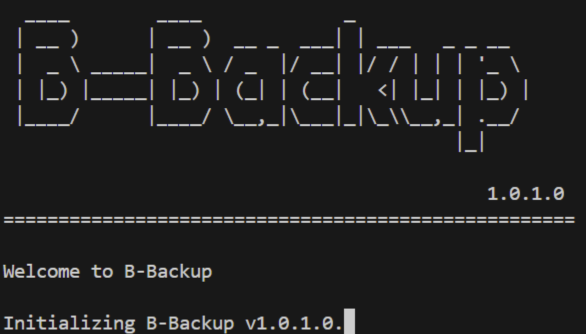
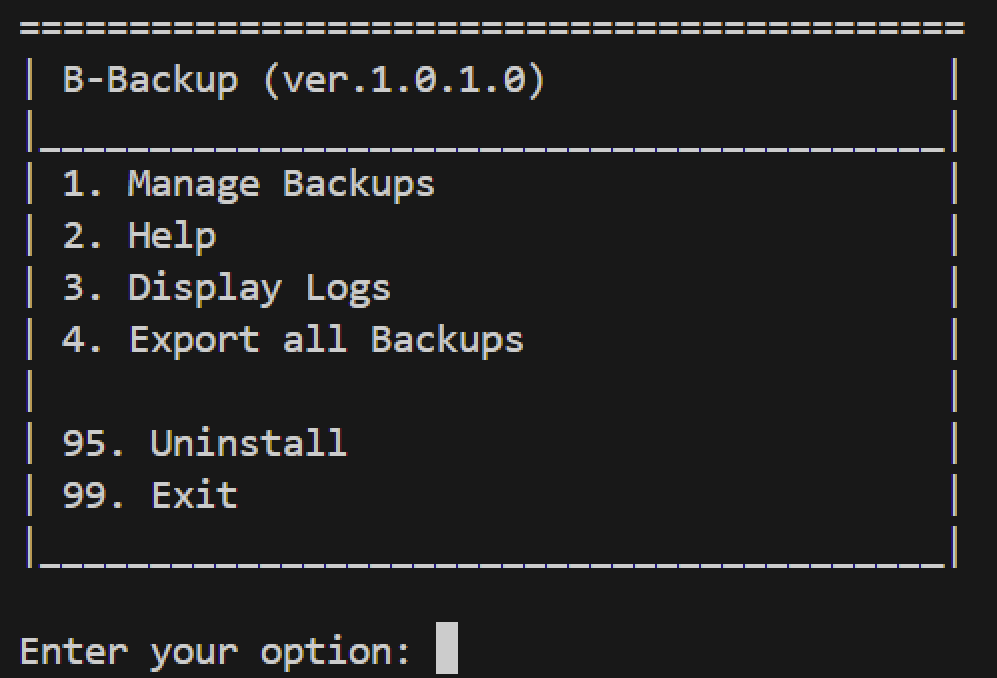
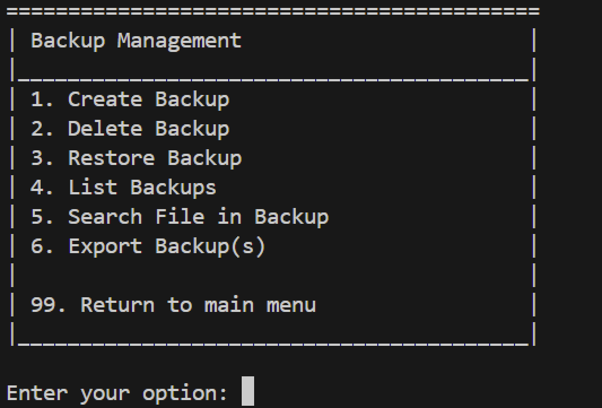

B-Backup
Introduction
Welcome to B-Backup, a Bash tool that simplifies the process of backing up files and directories. Designed for ease of use and efficiency, B-Backup offers a range of features to ensure seamless backup and recovery of data. This documentation provides an overview of the tool, its features and how to use it effectively.
B-Backup minimum requirements
Permissions
Concretization of the task
We decided to create our script based on Mr Waldvogel's suggestion. We decided to do the advanced version of the task, which is to create a backup script with the required features and our own. The full list of features can be found in the Features section.
User Story
The use case for this script is if user X wants to back up his files on his drives, but at the same time encrypt them and delete them after the backup, then this script is exactly what user X is looking for. B-Backup also has a nice, user-friendly interface and of course well written documentation. B-Backup also logs all actions in a log file, so user X can always see what has been done.

What is B-Backup?
B-Backup is a Bash script that allows you to back up files and directories with ease. There are many features that make B-Backup a powerful tool for backing up data like encryption, compression, logging, and many more that you can explore:
{kind=link}

Features
B-Backup offers the following features:
Backup: Back up files and directories to a hidden location on the user's system.
Encryption: Encrypt the backup using PKZIP encryption.
Compression: Compress the backup using DEFLATE compression.
Deletion: Delete the original files and directories after the backup is complete.
Restore: Restore the backup to the original or a custom location.
and many more:
Export: Export the backup(s) to a custom location.
Logging: Log all actions in a log file for future reference.
List backups: List all backups created by B-Backup.
Delete individual backups: Delete individual backups created by B-Backup.
Search for a specific file in a backup: Search for a specific file in any backup created by B-Backup.
Error handling: Handle errors gracefully and provide helpful messages to the user.
Help in menu: Get help on how to operate B-Backup.
Layout
We opted for a console layout, because we found that more time efficient than creating an extra GUI. We did however make the console as user-friendly as possible. (see pictures above and below)
Menu | Backup Management |
|---|---|
 |  |
{kind=link}
{kind=link}
Script Overview
The script is divided into several sections, each responsible for a specific task. The main sections are:
Startup: Displays the welcome message and checks for dependencies.
Menu: Displays the main menu and handles user input.
Backup Management: Handles the backup, encryption, compression, and deletion of files and directories but also the restore, export, list, delete, and search functions.
Startup
The startup section displays the welcome message and checks for dependencies. If any dependencies are missing, the script will create the necessary directories and files. You can see this code in the startup function in the script.
Menu
The menu section displays the main menu and handles user input. The user can choose from a range of options, such as backing up files, restoring backups, exporting backups, listing backups, deleting backups, searching for files in backups, and getting help (see features). You can see this code in the menu and backup_menu function in the script.
Backup Management
Here comes the tricky part. The backup management section handles the backup, encryption, compression, and deletion of files and directories. It also handles the restore, export, list, delete, and search functions. You can see this code in the backup, restore, export, list_backups, delete_backup, and search_file functions in the script. For each single one of these functions, we have successfully implemented error handling to catch each possible error that could occur. Let's take a closer look at the core functions of the script. We will not go into every single detail of the functions, but we will give you an overview of the most important parts of them.
Backup function
This part of the function asks the user for a name for the backup. The user has to enter a name, that is longer than 0 characters. If the user enters a name that is shorter than 0 characters (e.g. Enter), the script will ask the user again for a name. The script will then log the name of the backup in the log file. After that, the script will create a new folder with the name of the backup in the home directory of project. The script will then log the creation of the folder in the log file.
Search function
This part of the function lists all existing backups found in the hidden directory of the project. The script then asks the user for the name of the backup in which the user wants to search for a file. The script then asks the user for the name of the file the user wants to search for. The script then checks if the backup exists. If the backup exists, the script will log that the backup exists in the log file. The script then checks if the file exists in the backup. This is being done by using the unzip -l command to list all files in the backup and then grepping for the file name. If the file exists in the backup, the script will log that the file exists in the backup in the log file and will display a message to the user that the file exists in the backup. The user has later the option to restore the file from the backup to the original location or to a custom location.
Restore function
Now this function is also a very clever one. The script asks the user for the name of the backup the user wants to restore. The script then checks if the backup exists. If the backup exists, the script will log that the backup exists in the log file. The script then asks the user if the user wants to restore the backup to the original path. If the user does not want to restore the backup to the original path, the script will ask the user if the user wants to restore the backup to a custom path. If the user does not want to restore the backup at all, the script will log that the backup was not restored at all in the log file and will return to the menu. If the user wants to restore the backup to a custom path, the script will ask the user for the custom path. The script will then extract the backup to the custom path. The script will log that the backup was extracted to the custom path in the log file and will display a message to the user that the backup was extracted to the custom path. If the user wants to restore the backup to the original path, the script will extract the backup to the original path. This is only possible, because we saved the original path in a file in the hidden folder of the backup. This enables us to restore the backup to the original path even if the user has moved the original files or forgot where the original files were. The script will log that the backup was restored to the original path in the log file and will display a message to the user that the backup was restored to the original path. The user has later the option to delete the backup from the hidden folder of the project.
Testing
We have tested the script on a variety of possible problems and even on different linux distributions (Ubuntu and Kali). Below are the results of the tests:
Conclusion
We have successfully created a backup script that meets the requirements of the task. The script is user-friendly and efficient, offering a range of features to ensure seamless backup and recovery of data. We have also implemented error handling to catch any possible errors that could occur. The script has been tested on a variety of possible problems and different linux distributions, and has been found to work as expected. We are confident that B-Backup will be a valuable tool for users looking to back up their files and directories with ease.
In conclusion, we are very satisfied with the result of our work and if we had to do it again, we would do it exactly the same way. We are very proud of our work, and we hope that you will enjoy using B-Backup as much as we enjoyed creating it.